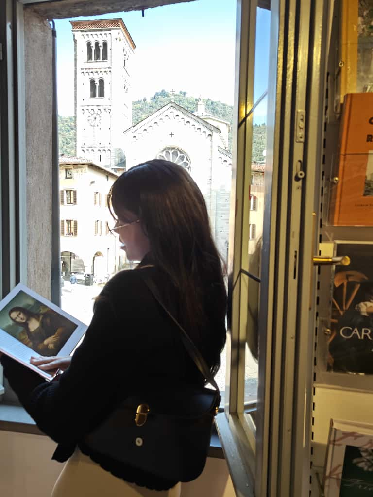

Designing Ideas.
Creating Experiences.
I'm Luiza Nunes, a Graphic and Multimedia Design student, passionate about creativity, visual communication, and digital experiences. I enjoy exploring how design, technology, and multimedia come together to create meaningful, user-centered solutions.
My main focus is UX/UI Design and Motion Design. I am currently working as a freelance designer while seeking internship opportunities to further develop my skills and grow as a creative professional.

Luiza Nunes
Graphic & Multimedia DesignerEducation
Bachelor's Degree in Graphic & Multimedia Design
ESAD.CR
2023-2026Software & Tools
Figma
Adobe Illustrator
Adobe Photoshop
Adobe InDesign
After Effects
Visual Studio Code
HTML & CSS
Resume
Interested in learning more about my academic background and experience?
Download Resume